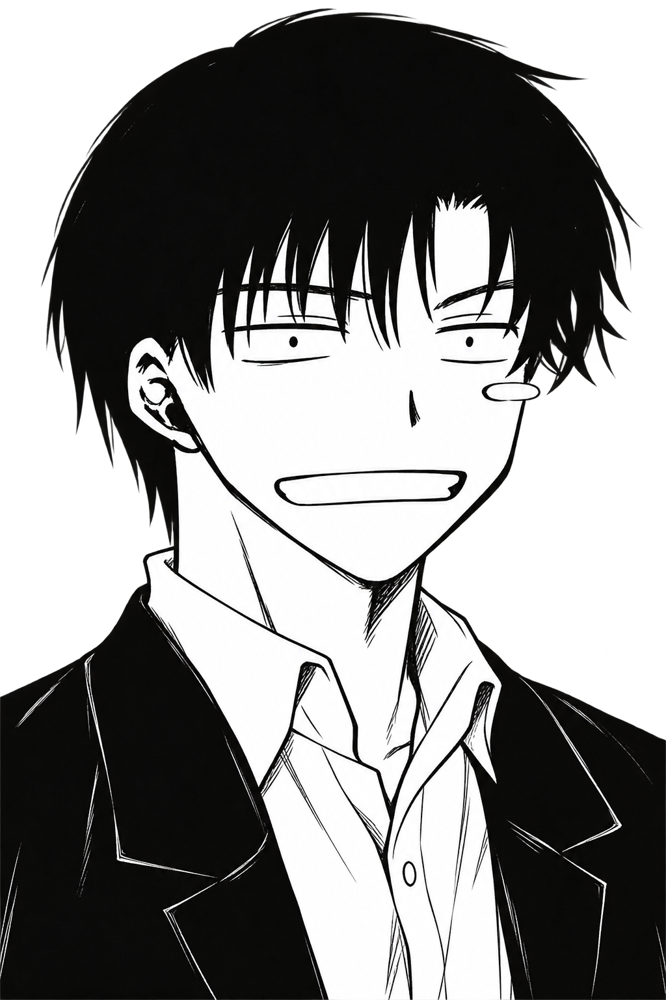

UNDEFINED未定。
A PAGE OF ME / 001

想看点什么？
好奇心 / 未完待续 …
点击小格子，翻开这一页。
Life, in a few little panels.
把日常装进格子，偶尔越过边界。01 / ABOUT ME
还不急着被定义。
你好，我是「未定」。
喜欢把日常的灵感，做成有意思的东西。
这里放作品，也留下一些走神的瞬间。
边做边想，边走边看。
A HUMAN, NOT JUST A PORTFOLIO.
02 / SELECTED EXPLORATIONS
概念作品 / 点击一格，继续往里看。
03 / SAY HELLO
04 / A MOMENT OUTSIDE
Somewhere I'd rather be.
以你提供的照片为参考重新生成 · 1536 × 102405 / NOTE TO SELF
不必每一次出发，
都知道终点在哪里。
多走一点路，多试一种可能。
那些看似无用的好奇，
说不定就是下一件作品的起点。
keep going, 未定
PROJECT
概念展示 · 待补充真实项目过程与成果。